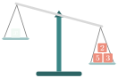
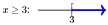
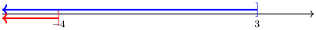
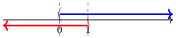
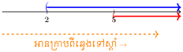

- ស្រាយបញ្ជាក់វិសមភាពងាយៗបានយ៉ាងត្រឹមត្រូវ។
- ដោះស្រាយវិសមីការ និងប្រព័ន្ធវិសមីការដឺក្រេទី១មានមួយអញ្ញាត។
- បកស្រាយ និងដោះស្រាយចំណោទដែលទាក់ទងនឹងវិសមីការ។

រំលឹកចំណេះដឹង
សួស្ដីប្អូនៗ! នៅក្នុងមេរៀនមុន យើងបានរៀនពីរបៀបដោះស្រាយ សមីការ ដែលមានសញ្ញាស្មើ (\(\displaystyle =\)) ដូចជា \(\displaystyle x + 4 = 7\) មានន័យថាអង្គទាំងពីរមានទម្ងន់ស្មើគ្នាបេះបិទ។
ចុះបើអង្គម្ខាងធ្ងន់ជាងអង្គម្ខាងទៀតវិញ តើយើងត្រូវធ្វើដូចម្តេច?
- ឧទាហរណ៍៖ បើយើងមានទម្ងន់ \(\displaystyle x+4\) ស្រាលជាង \(\displaystyle 7\) នោះយើងសរសេរបានជា \(\displaystyle x + 4 < 7\)។
នេះហើយដែលយើងហៅថា វិសមីការ! តោះយើងទៅសិក្សាពីលក្ខណៈរបស់វាទាំងអស់គ្នា។

១. លក្ខណៈនៃវិសមភាព
ងាយយល់
វិសមភាព ប្រៀបបាននឹងជញ្ជីងដែលទោរទៅម្ខាង! សញ្ញាវិសមភាពមានដូចជា៖
- \(\displaystyle >\) (ធំជាង) និង \(\displaystyle <\) (តូចជាង)
- \(\displaystyle \ge\) (ធំជាង ឬស្មើ) និង \(\displaystyle \le\) (តូចជាង ឬស្មើ)
តើមានអ្វីកើតឡើងបើកូនជញ្ជីងមិនស្មើគ្នា ហើយយើងថែម ឬដកទម្ងន់ស្មើគ្នាពីអង្គទាំងសងខាង? ជញ្ជីងនៅតែទោរទៅខាងដដែល!
ឧទាហរណ៍ទី ១៖ តើមានអ្វីកើតឡើងបើគ្រូបូក ឬដកចំនួនតែមួយទៅលើអង្គទាំងសងខាងនៃវិសមភាព?
គិតមុនគូ
ឧបមាថា \(\displaystyle 4 > 3\) ។ បើយើងបូក \(\displaystyle 6\) ទៅអង្គទាំងសងខាង តើវានៅតែពិតឬទេ?
តោះ! អនុវត្តទាំងអស់គ្នា៖
ចុះបើយើងដក \(\displaystyle 2\) វិញ?
ដូចនេះ
វិសមភាពនៅតែរក្សាទិសដៅដដែល!
ជាទូទៅ៖ បើគេបូក ឬដកចំនួនតែមួយលើអង្គទាំងពីរនៃវិសមភាព គេបានវិសមភាពថ្មីដែលមានទិសដៅដូចវិសមភាពដើម។
ឧទាហរណ៍ទី ២៖ ចុះបើយើងគុណ ឬចែកវិញ តើវានៅតែរក្សាទិសដៅដូចការបូកដកដែរឬទេ? ឧបមាថា \(\displaystyle 7 > 5\) និង \(\displaystyle 8 > 6\) ។
គិតមុនគូ
តោះយើងសាកល្បងយកវិសមភាពមកគុណនិងចែក ជាមួយនឹងចំនួនវិជ្ជមានផង និងអវិជ្ជមានផង ដើម្បីរង់ចាំមើលថាតើមានរឿងអ្វីកើតឡើង!
តោះ! អនុវត្តទាំងអស់គ្នា៖
ករណីគុណ/ចែក នឹងចំនួនវិជ្ជមាន៖
ករណីគុណ/ចែក នឹងចំនួនអវិជ្ជមាន៖
ចំណុចដែលសិស្សតែងតែច្រឡំញឹកញាប់ (ប្រយ័ត្នសញ្ញាដក!)
ប្អូនៗត្រូវចាំទុកក្នុងចិត្តជានិច្ចណា៎! ពេលដែលយើងគុណ ឬចែកអង្គទាំងសងខាងនៃវិសមីការនឹង ចំនួនអវិជ្ជមាន យើងត្រូវតែ ត្រឡប់សញ្ញាវិសមភាព ជានិច្ច!
- ពី \(\displaystyle >\) ត្រឡប់ទៅ \(\displaystyle <\)
- ពី \(\displaystyle <\) ត្រឡប់ទៅ \(\displaystyle >\)
- ពី \(\displaystyle \ge\) ត្រឡប់ទៅ \(\displaystyle \le\)
- ពី \(\displaystyle \le\) ត្រឡប់ទៅ \(\displaystyle \ge\)
បើមិនត្រឡប់ទេ វិសមភាពនឹងក្លាយជាមិនពិត! ឧទាហរណ៍ \(\displaystyle 2 < 5\) បើគុណនឹង \(\displaystyle -1\) គឺ \(\displaystyle -2 > -5\)។
ជាទូទៅ៖
- បើគេគុណ ឬចែកអង្គទាំងពីរនៃវិសមភាពនឹង ចំនួនវិជ្ជមាន តែមួយ គេបានវិសមភាពថ្មីដែលមាន ទិសដៅដូច វិសមភាពដើម។
- បើគេគុណ ឬចែកអង្គទាំងពីរនៃវិសមភាពនឹង ចំនួនអវិជ្ជមាន តែមួយ គេបានវិសមភាពថ្មីដែលមាន ទិសដៅផ្ទុយ ពីវិសមភាពដើម។
លំហាត់គំរូទី 3 : គេឱ្យ \(\displaystyle a\) និង \(\displaystyle b\) ជាចំនួនខុសពីសូន្យ។ ចូរស្រាយបញ្ជាក់ថា៖
- \(\displaystyle a^2 + b^2 \ge 2ab\)
- បើ \(\displaystyle a\) និង \(\displaystyle b\) មានសញ្ញាដូចគ្នា នោះ \(\displaystyle \frac{a}{b} + \frac{b}{a} \ge 2\)
គិតមុនគូ
អាថ៌កំបាំងសម្រាប់ការស្រាយបញ្ជាក់វិសមភាព គឺយើងតែងតែផ្តើមចេញពីសមភាព ឬវិសមភាព! ឧទាហរណ៍៖ ការេនៃចំនួនមួយវិជ្ជមានជានិច្ច \(\displaystyle (x^2 \ge 0)\)។ ដូច្នេះ បើយើងយក \(\displaystyle (a - b)^2 \ge 0\) មកពន្លាត នោះយើងប្រាកដជានឹងទាញបានលទ្ធផលដែលចង់បានមិនខាន។
តោះ! អនុវត្តទាំងអស់គ្នា៖
យើងមាន \(\displaystyle (a - b)^2 \ge 0\)
ពន្លាតកន្សោមយើងបាន៖ \(\displaystyle a^2 - 2ab + b^2 \ge 0\)
បូកអង្គទាំងពីរនឹង \(\displaystyle 2ab\) យើងបាន៖\[a^2 + b^2 - 2ab + 2ab \ge 2ab\]ដូចនេះ \(\displaystyle \boxed{a^2 + b^2 \ge 2ab}\)
ដោយប្រើលទ្ធផលខាងលើ \(\displaystyle a^2 + b^2 \ge 2ab\)។
បើ \(\displaystyle a\) និង \(\displaystyle b\) មានសញ្ញាដូចគ្នានោះ ផលគុណរបស់វា \(\displaystyle ab > 0\)។
ចែកអង្គទាំងពីរនៃវិសមភាពនឹង \(\displaystyle ab > 0\) វិសមភាព មិនប្ដូរទិសដៅ ទេ៖\[\frac{a^2 + b^2}{ab} \ge \frac{2ab}{ab} \quad \Rightarrow \quad \frac{a^2}{ab} + \frac{b^2}{ab} \ge 2 \quad \Rightarrow \quad \frac{a}{b} + \frac{b}{a} \ge 2\]ដូចនេះ \(\displaystyle \boxed{\frac{a}{b} + \frac{b}{a} \ge 2}\)
លំហាត់គំរូទី 4 : \(\displaystyle a\) និង \(\displaystyle b\) ជាចំនួនពិតវិជ្ជមាន។ ចូរស្រាយបញ្ជាក់ថា \(\displaystyle (a+b)\left(\frac{1}{a} + \frac{1}{b}\right) \ge 4\) ។
គិតមុនគូ
នៅទីនេះ យើងអាចគុណពន្លាតកន្សោមនៅអង្គទី១សិន។ បន្ទាប់មក យើងអាចយកលទ្ធផលពីលំហាត់គំរូទី 3.ខ គឺ \(\displaystyle \frac{a}{b} + \frac{b}{a} \ge 2\) មកជួយស្រាយបញ្ជាក់!
តោះ! អនុវត្តទាំងអស់គ្នា៖
មុនដំបូង គ្រូសុំយកកន្សោមនេះមកគុណពន្លាតវង់ក្រចកសិន។ មើលណា៎ ពេលយើងគុណបំបែកចូលគ្នា៖
ឃើញទេប្អូនៗ? លទ្ធផលក្រោយពេលពន្លាតគឺមានផុសចេញនូវកន្សោម \(\displaystyle \frac{a}{b} + \frac{b}{a}\)! តើប្អូនៗនៅចាំលទ្ធផលពីលំហាត់គំរូទី 3.ខ ទេ? យើងទើបតែបានស្រាយបញ្ជាក់រួចមកហើយថា ចំពោះគ្រប់ចំនួនវិជ្ជមាន ផលបូកនេះគឺជានិច្ចកាល \(\displaystyle \frac{a}{b} + \frac{b}{a} \ge 2\) ។
ដូច្នេះ ដើម្បីទទួលបានទម្រង់ដើមមកវិញ គ្រូគ្រាន់តែយកវិសមភាពនេះ មកបូកថែមលេខ 2 ទៅលើអង្គទាំងសងខាង៖
ដូចនេះ \(\displaystyle \boxed{(a+b)\left(\frac{1}{a} + \frac{1}{b}\right) \ge 4}\)
លំហាត់គំរូទី 5 (លំហាត់កម្រិតសិស្សពូកែ!) : ចំពោះគ្រប់ចំនួនពិត \(\displaystyle a, b,\) និង \(\displaystyle c\)
ចូរស្រាយបញ្ជាក់ថា \(\displaystyle a^2 + b^2 + c^2 \ge ab + bc + ca\) ។
គិតមុនគូ
អាថ៌កំបាំងមួយទៀត! បើឃើញមាន \(\displaystyle ab, bc, ca\) គឺវាតែងតែពាក់ព័ន្ធនឹងរូបមន្ត \(\displaystyle (x-y)^2\) ។ បើយើងគុណអង្គទាំងសងខាងនៃវិសមភាពខាងលើនេះនឹងលេខ \(\displaystyle 2\) នោះយើងប្រាកដជាអាចបំបែកវាជាផលបូកនៃការេបាន!
តោះ! អនុវត្តទាំងអស់គ្នា៖
ក្បួនដ៏មានប្រសិទ្ធភាពបំផុត គឺយើងត្រូវផ្តើមចេញពីសច្ចភាព! គ្រូសុំលើកយកការេនៃផលដក ចំនួនបីគូ មកសរសេរ ព្រោះវាតែងតែវិជ្ជមានជានិច្ច \(\displaystyle (x^2 \ge 0)\)៖
បន្ទាប់មក គ្រូនឹងយកវិសមភាពទាំងបីនេះមកបូកបញ្ចូលគ្នា (អង្គឆ្វេងបូកអង្គឆ្វេង អង្គស្តាំបូកអង្គស្តាំ)៖
ប្អូនៗសង្កេតឃើញទេថា តួគ្រប់យ៉ាងសុទ្ធតែមានលេខ 2 នៅពីមុខ? អញ្ចឹងគ្រូសម្រួលវាដោយចែកអង្គទាំងពីរនឹង 2 (ដោយសារ 2 ជាចំនួនវិជ្ជមាន វិសមភាពរក្សាទិសដៅដដែលណា៎!)៖
ចុងក្រោយ យើងគ្រាន់តែបោះតួដែលមានសញ្ញាដកទាំងអស់ ឆ្លងទៅអង្គម្ខាងទៀត ជាការស្រេច!
ដូចនេះ \(\displaystyle \boxed{a^2 + b^2 + c^2 \ge ab + bc + ca}\)
សាកល្បងខ្លួនឯង
ចូរប្រើប្រាស់ចំណេះដឹងខាងលើ ដើម្បីស្រាយបញ្ជាក់វិសមភាពខាងក្រោម៖
- \(\displaystyle a\) និង \(\displaystyle b\) ជាចំនួនមិនសូន្យហើយវិជ្ជមាន។ ចូរស្រាយបញ្ជាក់ថា បើ \(\displaystyle a > b\) គេបាន \(\displaystyle a^2 > b^2\) ។
- បង្ហាញថាបើ \(\displaystyle x > 0\) នោះ \(\displaystyle x + \frac{1}{x} \ge 2\) ។
(គន្លឹះ៖ សាកល្បងប្រើលទ្ធផលពីលំហាត់គំរូទី 3.ខ ដោយតាង \(\displaystyle a=x\) និង \(\displaystyle b=1\)) - បង្ហាញថាបើ \(\displaystyle a\) និង \(\displaystyle b\) ជាចំនួនពិតវិជ្ជមាន នោះ \(\displaystyle 2(a^2 + b^2) \ge (a+b)^2\) ។
(គន្លឹះ៖ ពន្លាតអង្គទី២ រួចប្រើលទ្ធផលពីលំហាត់គំរូទី 3.ក)
២. វិសមីការដឺក្រេទី១ មានមួយអញ្ញាត
ក. វិសមីការនិងចម្លើយ
- សមីការ៖ រក \(\displaystyle x\) ដែល \(\displaystyle x + 4 = 7\) ជាសមីការដែលមានចម្លើយតែមួយគត់គឺ \(\displaystyle x = 7 - 4 = 3\) ។
- វិសមីការ៖ រក \(\displaystyle x\) ដែល \(\displaystyle x + 4 < 7\) ជាវិសមីការដឺក្រេទី១ មានមួយអញ្ញាត \(\displaystyle x\) ។
ប្អូនៗឃើញទេ? សម្រាប់វិសមីការ ចម្លើយមិនមែនមានតែមួយលេខនោះទេ! តម្លៃ \(\displaystyle x\) ណាដែលយកមកជំនួសហើយធ្វើឱ្យវិសមភាពនោះពិត សុទ្ធតែជាចម្លើយទាំងអស់។ សាកល្បងជំនួសលេខមើល៍៖
- បើ \(\displaystyle x = 4 \Rightarrow 4 + 4 < 7 \Rightarrow 8 < 7\) (មិនពិត) \(\displaystyle \rightarrow\) អញ្ចឹង \(\displaystyle x = 4\) មិនមែនជាចម្លើយទេ។
- បើ \(\displaystyle x = 3 \Rightarrow 3 + 4 < 7 \Rightarrow 7 < 7\) (មិនពិត) \(\displaystyle \rightarrow\) \(\displaystyle x = 3\) ក៏មិនមែនជាចម្លើយដែរ។
- បើ \(\displaystyle x = 2 \Rightarrow 2 + 4 < 7 \Rightarrow 6 < 7\) (ពិត) \(\displaystyle \rightarrow\) អាហ្នឹងហើយ! \(\displaystyle x = 2\) ជាចម្លើយ!
- បើ \(\displaystyle x = 1 \Rightarrow 1 + 4 < 7 \Rightarrow 5 < 7\) (ពិត) \(\displaystyle \rightarrow\) \(\displaystyle x = 1\) ក៏ជាចម្លើយដែរ។
ដូចនេះ មានតម្លៃ \(\displaystyle x\) រាប់មិនអស់ (ឱ្យតែតូចជាង \(\displaystyle 3\)) ដែលអាចជាចម្លើយ! យើងអាចសរសេរចម្លើយជាវិសមភាពគឺ \(\displaystyle x < 3\) ។ ដើម្បីឱ្យកាន់តែងាយស្រួលមើល គ្រូនឹងបង្ហាញពីរបៀបគូសចម្លើយនៅលើ បន្ទាត់ចំនួន ដូចខាងក្រោម៖
គន្លឹះពិសេសពីគ្រូ៖ របៀបគូសក្រាបឱ្យបានរហ័ស និងមិនច្រឡំ!
នៅពេលគូសបន្ទាត់ចម្លើយ សិស្សភាគច្រើនតែងតែច្រឡំទិសដៅ និងការងាកវង់ក្រចក។ សាកល្បងប្រើគន្លឹះនេះ៖
ក្បួនដៃឆ្វេងស្តាំ៖
លើកដៃស្តាំឡើង កែងដៃទៅស្តាំ វារៀងដូចសញ្ញា \(\displaystyle >\) ។ អញ្ចឹងបើ \(\displaystyle x > 3\) បន្ទាត់ដិតត្រូវរត់ទៅខាងស្តាំ!
លើកដៃឆ្វេងឡើង កែងដៃទៅឆ្វេង វារៀងដូចសញ្ញា \(\displaystyle <\) ។ អញ្ចឹងបើ \(\displaystyle x < 3\) បន្ទាត់ដិតត្រូវរត់ទៅខាងឆ្វេង!
- ក្បួនវង់ក្រចក/ដង្កៀប៖ \(\displaystyle (, ), [, ]\) ត្រូវតែហាមាត់ ទៅរកបន្ទាត់ដិតជានិច្ច! ប្រៀបដូចជាវាកំពុងស៊ីបន្ទាត់ដិតអញ្ចឹង ។
ប្រើវង់ក្រចក \(\displaystyle (\) សម្រាប់ \(\displaystyle <\) ឬ \(\displaystyle >\) (មិនយកតម្លៃត្រង់នោះ) ហើយប្រើដង្កៀប \(\displaystyle [\) សម្រាប់ \(\displaystyle \le\) ឬ \(\displaystyle \ge\) (យកតម្លៃត្រង់នោះ)។

ខ. របៀបដោះស្រាយវិសមីការ
ឥឡូវនេះ យើងមកមើលពីរបៀបដោះស្រាយវិសមីការវិញម្តង! វិធីសាស្ត្រគឺដូចគ្នាបេះបិទទៅនឹងការដោះស្រាយសមីការដែលប្អូនៗធ្លាប់រៀនអញ្ចឹងដែរ (បោះឆ្លងសញ្ញាដូរ...) គ្រាន់តែមានលក្ខខណ្ឌពិសេសមួយគត់ដែលគ្រូធ្លាប់បានរំលឹកពីខាងដើម គឺ៖ ប្រយ័ត្នសញ្ញាដកពេលគុណនិងចែកណា៎!
លំហាត់គំរូទី 1 : ដោះស្រាយវិសមីការ \(\displaystyle -3x + 1 < 7\)
គិតមុនគូ
យើងត្រូវបោះលេខ \(\displaystyle 1\) ទៅអង្គម្ខាងទៀត រួចចែកនឹង \(\displaystyle -3\)។ ដោយសារ \(\displaystyle -3\) ជាចំនួនអវិជ្ជមាន យើងត្រូវប្រយ័ត្នប្ដូរសញ្ញាវិសមភាព!
តោះ! អនុវត្តទាំងអស់គ្នា៖
ដូចនេះ ចម្លើយនៃវិសមីការគឺ \(\displaystyle \boxed{x > -2}\)
នេះជារបៀបគូសចម្លើយជាក្រាបលើបន្ទាត់ចំនួន៖
លំហាត់គំរូទី 2 : ដោះស្រាយវិសមីការ \(\displaystyle 2x - 4 \le x + 4\)
តោះ! អនុវត្តទាំងអស់គ្នា៖
ដូចនេះ ចម្លើយនៃវិសមីការគឺ \(\displaystyle \boxed{x \le 8}\)
នេះជារបៀបគូសចម្លើយជាក្រាបលើបន្ទាត់ចំនួន៖
(ប្រើដង្កៀប \(\displaystyle ]\) ព្រោះមានសញ្ញា \(\displaystyle \le\))
លំហាត់គំរូទី 3 (ករណីពិសេស!) : ចូរដោះស្រាយវិសមីការ៖
ក. \(\displaystyle 3x + 2x + 5 < 8x + 4 - 3x\) ខ. \(\displaystyle 4x + 2 \le 6x + 2 - 2x\)
តោះ! អនុវត្តទាំងអស់គ្នា៖
ក. \(\displaystyle 3x + 2x + 5 < 8x + 4 - 3x\)
វិភាគ៖ តើមានតម្លៃ \(\displaystyle x\) ណាមួយដែលគុណនឹង \(\displaystyle 0\) ហើយអាចតូចជាង \(\displaystyle -1\) ទេ? គ្មានទេ!
ដូចនេះ វិសមីការគ្មានចម្លើយទេ (មិនបាច់បកស្រាយជាក្រាប)។
ខ. \(\displaystyle 4x + 2 \le 6x + 2 - 2x\)
វិភាគ៖ ទោះបីជា \(\displaystyle x\) យកតម្លៃណាក៏ដោយ ក៏លទ្ធផលវានៅតែស្មើនឹង \(\displaystyle 0 \le 0\) ដែលជាការណ៍ពិតជានិច្ច។
ដូចនេះ វិសមីការមានចម្លើយចំពោះគ្រប់តម្លៃនៃ \(\displaystyle x\) ក្នុង \(\displaystyle \mathbb{R}\)។
ចម្លើយជាក្រាបគឺបន្ទាត់ចំនួនទាំងមូល៖
សាកល្បងខ្លួនឯង
ចូរដោះស្រាយវិសមីការខាងក្រោម និងសង់ក្រាបនៃចម្លើយ៖
- \(\displaystyle \frac{x}{4} + 2 > 7\)
- \(\displaystyle 2(x + 3) > 5x + 5\)
- \(\displaystyle 0.37x + 0.17 > 3.5\)
៣. ប្រព័ន្ធវិសមីការដឺក្រេទី១ មានមួយអញ្ញាត
ចុះបើគ្រូដាក់វិសមីការពីរឱ្យប្អូនៗដោះស្រាយក្នុងពេលតែមួយវិញ តើយើងត្រូវធ្វើដូចម្តេច? ការដាក់វិសមីការពីរឬច្រើនផ្គុំចូលគ្នា គេហៅថា «ប្រព័ន្ធវិសមីការ»។
ការដោះស្រាយវាគឺសាមញ្ញណាស់! ប្អូនៗគ្រាន់តែដោះស្រាយវិសមីការនីមួយៗដាច់ដោយឡែកពីគ្នា រួចយកចម្លើយទាំងពីរមកគូសត្រួតស៊ីគ្នានៅលើក្រាបតែមួយ។ តំបន់ណាដែលវាជាន់គ្នា (ប្រសព្វគ្នា) នោះហើយជាចម្លើយរួមរបស់វា! តោះមើលការអនុវត្តទាំងអស់គ្នា៖
លំហាត់គំរូទី 1 : រកមួយចំនួនបើថែមនឹង 5 ត្រូវធំជាង 10 ហើយពីរដងនៃចំនួននោះតូចជាង 30 ។
គិតមុនគូ
ជាដំបូង យើងត្រូវបកប្រែប្រធានបទដែលគេសរសេរជាអក្សរ ទៅជាភាសាគណិតវិទ្យា (វិសមីការ) ពីរសិន។ បន្ទាប់មកយើងគ្រាន់តែដោះស្រាយវា រួចយកចម្លើយទាំងពីរមកត្រួតស៊ីគ្នានៅលើក្រាបតែមួយ ជាការស្រេច!
តោះ! អនុវត្តទាំងអស់គ្នា៖
- ថែម 5 លើចំនួននោះត្រូវធំជាង 10 បកស្រាយដោយវិសមីការ (1): \(\displaystyle x + 5 > 10\)
- ពីរដងនៃមួយចំនួននោះតូចជាង 30 បកស្រាយដោយវិសមីការ (2): \(\displaystyle 2x < 30\)
យើងបានប្រព័ន្ធវិសមីការ \(\displaystyle \begin{cases} x + 5 > 10 & (1) \\ 2x < 30 & (2) \end{cases}\)
ចំពោះវិសមីការ (1): \(\displaystyle x + 5 > 10 \Rightarrow x > 5\)
ចំពោះវិសមីការ (2): \(\displaystyle 2x < 30 \Rightarrow x < 15\)
ចម្លើយរួម (ប្រសព្វនៃចម្លើយទាំងពីរ)៖
គន្លឹះទាញរកតំបន់ប្រសព្វ៖ ពេលគូសបន្ទាត់រួច ដើម្បីកុំឱ្យវង្វេង ប្អូនៗគ្រាន់តែទម្លាក់ខ្សែបន្ទាត់ឈរពីចំណុចព្រំដែន (\(\displaystyle 5\) និង \(\displaystyle 15\)) ចុះមកក្រោម។ តំបន់ណាដែលមាន បន្ទាត់ដិតទាំងពីរជាន់គ្នា ទីនោះហើយជាចម្លើយរួម!
ផ្អែកលើក្រាប តំបន់ដែលបន្ទាត់ទាំងពីរត្រួតស៊ីគ្នា គឺនៅចន្លោះលេខ 5 និង 15។ យើងអាចសរសេរផ្តុំគ្នាបានថា \(\displaystyle 5 < x < 15\)។
ដូចនេះ ចម្លើយគឺ \(\displaystyle \boxed{5 < x < 15}\)
លំហាត់គំរូទី 2 : ចូរដោះស្រាយប្រព័ន្ធវិសមីការ \(\displaystyle \begin{cases} 2x + 5 \ge 5x - 4 & (1) \\ x - 7 \ge 2x - 3 & (2) \end{cases}\) ។
តោះ! អនុវត្តទាំងអស់គ្នា៖
ដោះស្រាយវិសមីការទី (1):
ដោះស្រាយវិសមីការទី (2):
ឥឡូវយើងយកចម្លើយទាំងពីរមកគូសត្រួតស៊ីគ្នាលើបន្ទាត់ចំនួនតែមួយ ដើម្បីរាវរកចម្លើយរួម៖

ដូចដែលប្អូនៗឃើញផ្ទាល់នឹងភ្នែក! តំបន់ដែលបន្ទាត់ពណ៌ខៀវ និងពណ៌ក្រហមរត់ត្រួតលើគ្នា គឺចាប់ផ្តើមពីចំណុច \(\displaystyle -4\) ចុះទៅក្រោមរហូត។ ដូច្នេះចម្លើយរួមរបស់យើង គឺត្រូវតែតូចជាង ឬស្មើ \(\displaystyle -4\) !
ដូចនេះ ចម្លើយនៃប្រព័ន្ធវិសមីការគឺ \(\displaystyle \boxed{x \le -4}\)
លំហាត់គំរូទី 3 (ចំណុចដែលសិស្សឧស្សាហ៍ច្រឡំ!) :
ចូរដោះស្រាយប្រព័ន្ធវិសមីការ \(\displaystyle \begin{cases} 3x + 2 > x + 2 & (1) \\ 5x - 3 < 2x & (2) \end{cases}\) ។
តោះ! អនុវត្តទាំងអស់គ្នា៖
ជាដំបូង គ្រូសុំដោះស្រាយវាម្តងមួយៗសិនណា៎។
ចំពោះវិសមីការ (1):
ចំពោះវិសមីការ (2):
ដំណាក់កាលយកចម្លើយមកប្រសព្វគ្នា៖
កន្លែងនេះហើយដែលសិស្សភាគច្រើនឧស្សាហ៍វង្វេង! គ្រូសុំណែនាំឱ្យប្អូនៗគូសបន្ទាត់ចម្លើយទាំងពីរនេះជាន់គ្នា ហើយប្រើយុទ្ធសាស្រ្ត «ទម្លាក់ខ្សែបន្ទាត់ឈរ» ដើម្បីរាវរកតំបន់ប្រសព្វ៖

តើប្អូនៗឃើញតំបន់ដែលបន្ទាត់ពណ៌ខៀវ និងពណ៌ក្រហមរត់ត្រួតពីលើគ្នាទេ? វាគឺស្ថិតនៅត្រង់ប្រឡោះកណ្តាល គឺចន្លោះពីលេខ \(\displaystyle 0\) ទៅដល់លេខ \(\displaystyle 1\) ហ្នឹងឯង!
បើយើងសរសេរជាភាសាគណិតវិទ្យា គឺ \(\displaystyle 0 < x < 1\) ។
ដូចនេះ ចម្លើយនៃប្រព័ន្ធវិសមីការគឺ \(\displaystyle \boxed{0 < x < 1}\)
លំហាត់គំរូទី 4 (ក្បួនអានបន្ទាត់ដូចអានសៀវភៅ!) :
ចូរដោះស្រាយប្រព័ន្ធវិសមីការ \(\displaystyle \begin{cases} x - 3 > -1 & (1) \\ 2x + 1 > 11 & (2) \end{cases}\) ។
តោះ! អនុវត្តទាំងអស់គ្នា៖
ដោះស្រាយវិសមីការ (1):
ដោះស្រាយវិសមីការ (2):
ក្បួនអានបន្ទាត់ដូចអានអក្សរ៖
គ្រូមានគន្លឹះមួយទៀត! បន្ទាប់ពីគូសបន្ទាត់រួច ដើម្បីរកចម្លើយ សូមប្អូនៗ សម្លឹងមើលក្រាបពីឆ្វេងទៅស្តាំ (ដូចពេលអានអត្ថបទ) រួចស្វែងរកតំបន់ណាដែលបន្ទាត់ទាំងពីរចាប់ផ្តើមមានវត្តមានព្រមគ្នា។

តោះ! អានពីឆ្វេងមកស្តាំ៖
- ពីលេខ \(\displaystyle 0\) ដល់ \(\displaystyle 2\) គ្មានបន្ទាត់សោះ។
- ចូលដល់លេខ \(\displaystyle 2\) យើងឃើញមានតែបន្ទាត់ពណ៌ខៀវមួយគត់ (នៅមិនទាន់យកទេ!)។
- លុះអានមកដល់លេខ \(\displaystyle 5\) ទើបយើងឃើញបន្ទាត់ទាំងពីរ (ខៀវ និង ក្រហម) រត់ត្រួតលើគ្នា ចាប់ពីទីនោះទៅមុខរហូត!
អញ្ចឹងចម្លើយរួមរបស់យើង គឺចាប់ផ្តើមពីលេខ 5 ទៅស្តាំ!
ដូចនេះ ចម្លើយនៃប្រព័ន្ធវិសមីការគឺ \(\displaystyle \boxed{x > 5}\)
សាកល្បងខ្លួនឯង
ចូរដោះស្រាយប្រព័ន្ធវិសមីការខាងក្រោម៖
- \(\displaystyle \begin{cases} 2x - 7 \le 6x + 5 \\ 4x - 11 \le 4 + x \end{cases}\)
- \(\displaystyle \begin{cases} \frac{3x}{4} - \frac{2}{3} \le \frac{4x - 3}{12} \\ 2x - 1 > \frac{3x - 4}{2} \end{cases}\)
៤. ចំណោទវិសមីការ
មកដល់ចំណុចចុងក្រោយហើយ! ការដោះស្រាយចំណោទវិសមីការ គឺមិនមានអ្វីស្មុគស្មាញខុសពីចំណោទសមីការទេណា៎។ ប្អូនៗគ្រាន់តែអនុវត្តតាម ៤ ជំហានងាយៗដូចខាងក្រោម៖
វិធាន ឬជំហានក្នុងការដោះស្រាយចំណោទ៖
- ជំហានទី ១. ជ្រើសរើសអញ្ញាត និងដាក់លក្ខខណ្ឌឱ្យវា
- ជំហានទី ២. បកប្រែបម្រាប់ប្រធាន ទៅជាវិសមីការ ឬប្រព័ន្ធវិសមីការ
- ជំហានទី ៣. ដោះស្រាយវិសមីការនោះ
- ជំហានទី ៤. ផ្ទៀងផ្ទាត់ចម្លើយ និងឆ្លើយតបទៅនឹងសំនួរ
លំហាត់គំរូទី 1 : ចតុកោណកែងមួយមានទទឹង \(\displaystyle x\) និងបណ្ដោយ \(\displaystyle x+2\) (គិតជាម៉ែត្រ)។
- ចូរកំណត់តម្លៃ \(\displaystyle x\) ដើម្បីឱ្យបរិមាត្រនៃចតុកោណកែង ធំជាង \(\displaystyle 32m\) ។
- ចូរកំណត់តម្លៃ \(\displaystyle x\) ដើម្បីឱ្យបរិមាត្រនៃចតុកោណកែង តូចជាង \(\displaystyle 32m\) ។
តោះ! អនុវត្តទាំងអស់គ្នា៖
ក. បរិមាត្រនៃចតុកោណកែងគឺ \(\displaystyle P = 2(\text{ទទឹង} + \text{បណ្ដោយ}) = 2[x + (x + 2)] = 2(2x + 2) = 4x + 4\)
ដោយសារ \(\displaystyle x\) ជាប្រវែង វាតែងតែធំជាងសូន្យជានិច្ច ហេតុនេះលក្ខខណ្ឌគឺ \(\displaystyle x > 0\) ។
បរិមាត្រត្រូវធំជាង \(\displaystyle 32m\) នាំឱ្យយើងបានវិសមីការ៖
ដោយសារ \(\displaystyle x > 7\) ស្របគ្នានឹងលក្ខខណ្ឌ \(\displaystyle x > 0\) ដូចនេះ តម្លៃដែលត្រូវជ្រើសរើសគឺ \(\displaystyle \boxed{x > 7}\) ។
ខ. បរិមាត្រត្រូវតូចជាង \(\displaystyle 32m\) នាំឱ្យយើងបានវិសមីការ៖
ដោយសារយើងមានលក្ខខណ្ឌ \(\displaystyle x > 0\) ផងដែរ យើងត្រូវប្រសព្វចម្លើយ៖ \(\displaystyle \begin{cases} x < 7 \\ x > 0 \end{cases}\)
ដូចនេះ តម្លៃដែលត្រូវជ្រើសរើសគឺ \(\displaystyle \boxed{0 < x < 7}\) ។
លំហាត់គំរូទី 2 : ពូសុខមានអាយុច្រើនជាងក្មួយ 32 ឆ្នាំ ហើយមានអាយុតិចជាងឪពុក 33 ឆ្នាំ។ បើគេដឹងថាផលបូកនៃអាយុអ្នកទាំងបីតិចជាង 103 ឆ្នាំ តើពូសុខអាចមានអាយុប៉ុន្មានឆ្នាំ? (គិតជាចំនួនគត់)
គិតមុនគូ
យើងតាង \(\displaystyle x\) ជាអាយុពូសុខ រួចសរសេរអាយុក្មួយ និងឪពុកទាក់ទងនឹង \(\displaystyle x\)។ បន្ទាប់មកបូកអាយុអ្នកទាំងបី ឱ្យតូចជាង 103។ កុំភ្លេចលក្ខខណ្ឌអាយុត្រូវតែធំជាង 0!
តោះ! អនុវត្តទាំងអស់គ្នា៖
តាង \(\displaystyle x\) ជាអាយុរបស់ពូសុខ។ ដោយពូសុខមានអាយុច្រើនជាងក្មួយ 32 ឆ្នាំ នោះអាយុក្មួយគឺ \(\displaystyle x - 32\) ។ ដើម្បីឱ្យអាយុក្មួយវិជ្ជមាន យើងត្រូវមានលក្ខខណ្ឌ \(\displaystyle x - 32 > 0 \Rightarrow x > 32\) ។
ចំណែកឪពុកមានអាយុច្រើនជាងពូសុខ 33 ឆ្នាំ នោះអាយុឪពុកគឺ \(\displaystyle x + 33\) ។
ផលបូកអាយុអ្នកទាំងបីតូចជាង 103 ឆ្នាំ៖
យើងផ្ទៀងផ្ទាត់ជាមួយលក្ខខណ្ឌ \(\displaystyle x > 32\) យើងបានប្រព័ន្ធវិសមីការដែលចម្លើយគឺ \(\displaystyle 32 < x < 34\) ។
ដោយសារអាយុរបស់មនុស្សត្រូវតែគិតជាចំនួនគត់ តើនៅចន្លោះពី 32 ទៅ 34 មានលេខគត់អ្វីខ្លះ? ប្រាកដណាស់ គឺមានតែលេខ 33 មួយគត់!
ដូចនេះ ពូសុខមានអាយុ 33 ឆ្នាំ
លំហាត់គំរូទី 3 : តារាប្រឡងគណិតវិទ្យា ៣ ខែដំបូងទទួលបានពិន្ទុ 75, 82 និង 90 ។ តើខែទី ៤ នេះតារាត្រូវប្រឡងឱ្យបានពិន្ទុយ៉ាងតិចប៉ុន្មាន ទើបមធ្យមភាគពិន្ទុទាំង ៤ ខែរបស់គាត់ បានយ៉ាងតិច 85 ពិន្ទុ?
គិតមុនគូ
រឿងនេះច្បាស់ជាធ្លាប់កើតឡើងចំពោះប្អូនៗមែនទេ? ដើម្បីរកមធ្យមភាគ យើងត្រូវបូកពិន្ទុទាំង ៤ ខែចូលគ្នា រួចចែកនឹង ៤។ ពាក្យថា «យ៉ាងតិច 85» មានន័យថា \(\displaystyle \ge 85\)។
តោះ! អនុវត្តទាំងអស់គ្នា៖
តាង \(\displaystyle x\) ជាពិន្ទុដែលតារាត្រូវរកបាននៅខែទី ៤ (\(\displaystyle 0 \le x \le 100\))។
មធ្យមភាគពិន្ទុទាំង ៤ ខែ គឺត្រូវធំជាង ឬស្មើ 85៖
គ្រូសុំគុណអង្គទាំងពីរនឹង 4 (ដោយសារ 4 ជាលេខវិជ្ជមាន សញ្ញាមិនប្តូរទិសដៅទេ)៖
យើងឃើញថា \(\displaystyle x \ge 93\) ហើយដោយសារពិន្ទុពេញត្រឹម 100 អញ្ចឹងយើងបានប្រព័ន្ធចម្លើយ \(\displaystyle 93 \le x \le 100\)។
ដូចនេះ តារាត្រូវប្រឡងខែទី ៤ នេះឱ្យបានពិន្ទុ ចាប់ពី 93 ដល់ 100 ពិន្ទុ ទើបទទួលបានមធ្យមភាគ 85។ ប្អូនៗជួយលើកទឹកចិត្តតារាផង!
លំហាត់គំរូទី 4 : សុវណ្ណមានលុយត្រឹមតែ 20 000 រៀលប៉ុណ្ណោះនៅក្នុងហោប៉ៅ។ គាត់ចង់ជិះកង់បីពីសាលាទៅផ្ទះ។ កង់បីយកថ្លៃចាប់ផ្តើមជិះដំបូង 5 000 រៀល ហើយគិតបន្ថែម 1 500 រៀល ក្នុងមួយគីឡូម៉ែត្របន្តបន្ទាប់។ តើសុវណ្ណអាចជិះកង់បីនេះ បានចម្ងាយឆ្ងាយបំផុតប៉ុន្មានគីឡូម៉ែត្រ ទើបមិនខ្វះលុយគេ?
គិតមុនគូ
«មិនខ្វះលុយគេ» មានន័យថាថ្លៃជិះសរុប ត្រូវតែតូចជាង ឬស្មើ (\(\displaystyle \le\)) លុយដែលមានក្នុងហោប៉ៅ។
តោះ! អនុវត្តទាំងអស់គ្នា៖
តាង \(\displaystyle x\) ជាចម្ងាយផ្លូវគិតជាគីឡូម៉ែត្រ (\(\displaystyle x \ge 0\))។
ថ្លៃជិះកង់បីសរុប គឺស្មើនឹង ថ្លៃចាប់ផ្តើម បូកនឹងថ្លៃតាមគីឡូម៉ែត្រ៖ \(\displaystyle 5000 + 1500x\) ។
សុវណ្ណមានលុយតែ 20 000 រៀលទេ អញ្ចឹង៖
ដោយសារ \(\displaystyle x\) ជាចម្ងាយផ្លូវ វាត្រូវតែធំជាងឬស្មើ 0 ។ ហេតុនេះ \(\displaystyle 0 \le x \le 10\)។
ដូចនេះ សុវណ្ណអាចជិះកង់បីនេះបានចម្ងាយ យ៉ាងឆ្ងាយបំផុត 10 គីឡូម៉ែត្រ ប៉ុណ្ណោះ។ បើផ្ទះគាត់ឆ្ងាយជាង 10 គីឡូម៉ែត្រ គាត់ប្រហែលជាត្រូវដើរខ្លះហើយ!
សាកល្បងខ្លួនឯង
ក. គេឱ្យចតុកោណកែងមួយមានវិមាត្រ \(\displaystyle 5m\) និង \(\displaystyle x\) គិតជា \(\displaystyle m\) ។ តើ \(\displaystyle x\) ត្រូវយកតម្លៃណាខ្លះ ដើម្បីឱ្យចតុកោណកែងនេះមានបរិមាត្រធំជាង \(\displaystyle 18m\) និងមានផ្ទៃក្រឡាតូចជាង \(\displaystyle 50m^2\) ។
ខ. ផលបូកនៃបីចំនួនគត់តគ្នាគូធំជាង \(\displaystyle 1918\) តែតូចជាង \(\displaystyle 1924\) (កែសម្រួលពីប្រធានដើម) ។ ចូររកបីចំនួនគត់ទាំងបីនោះ ។
កម្រិតទី១៖ ចាប់ផ្តើម
កម្រិតទី២៖ អនុវត្ត
កម្រិតទី៣៖ គិតបន្ថែម
លំហាត់វាយតម្លៃសមត្ថភាព PISA
កញ្ចប់អ៊ិនធឺណិតទូរសព្ទ (Phone Data Plans)
សុខាចង់ភ្ជាប់កញ្ចប់អ៊ិនធឺណិតសម្រាប់ប្រើប្រាស់ក្នុងរយៈពេលមួយសប្ដាហ៍។ ក្រុមហ៊ុនទូរសព្ទមានជម្រើសពីរ៖
- ជម្រើស ក៖ បង់ប្រាក់ថេរ \(\displaystyle 2~000\text{ ៛}\) អាចប្រើប្រាស់អ៊ិនធឺណិតដោយគ្មានដែនកំណត់។
- ជម្រើស ខ៖ បង់ប្រាក់គោល \(\displaystyle 500\text{ ៛}\) បូកបន្ថែម \(\displaystyle 150\text{ ៛}\) ក្នុងមួយជីហ្គាបៃ (GB) សម្រាប់ការប្រើប្រាស់។
សំណួរទី១៖ បើសុខាប្រើប្រាស់អ៊ិនធឺណិតអស់ \(\displaystyle 5\text{ GB}\) ក្នុងមួយសប្ដាហ៍ តើជម្រើស ខ នឹងត្រូវចំណាយអស់ប្រាក់ប៉ុន្មាន?
ចម្លើយ៖
សំណួរទី២៖ បើតាង \(\displaystyle x\) ជាចំនួន GB ដែលប្រើប្រាស់ តើវិសមីការមួយណាខាងក្រោម ដែលបង្ហាញថា ជម្រើស ក ចំណាយតិចជាង ជម្រើស ខ?
- ក. \(\displaystyle 2~000 < 500 + 150x\)
- ខ. \(\displaystyle 2~000 > 500 + 150x\)
- គ. \(\displaystyle 2~000 \le 500 + 150x\)
- ឃ. \(\displaystyle 2~000 \ge 500 + 150x\)
សំណួរទី៣៖ តើសុខាត្រូវប្រើប្រាស់អ៊ិនធឺណិតយ៉ាងតិចប៉ុន្មាន GB ទើបការជ្រើសរើសយក ជម្រើស ក ចំណេញជាង ជម្រើស ខ? (បង្ហាញការគណនារបស់អ្នក)។
ចម្លើយ៖
ជម្រើសមធ្យោបាយធ្វើដំណើរ (PassApp vs Taxi)
មករាចង់ធ្វើដំណើរទៅកាន់ទីប្រជុំជនមួយ។ គាត់មានជម្រើសមធ្យោបាយធ្វើដំណើរពីរយ៉ាង៖
- កង់បី (PassApp)៖ ថ្លៃចាប់ផ្ដើម \(\displaystyle 3~000\text{ ៛}\) បូកបន្ថែម \(\displaystyle 1~200\text{ ៛}\) ក្នុងមួយគីឡូម៉ែត្រ។
- តាក់ស៊ី (Taxi)៖ ថ្លៃចាប់ផ្ដើម \(\displaystyle 4~000\text{ ៛}\) បូកបន្ថែម \(\displaystyle 1~000\text{ ៛}\) ក្នុងមួយគីឡូម៉ែត្រ។
សំណួរទី១៖ បើមករាធ្វើដំណើរចម្ងាយ \(\displaystyle 4\text{ km}\) តើមធ្យោបាយមួយណាអស់ប្រាក់តិចជាង?
ចម្លើយ៖
សំណួរទី២៖ សូមគូសសញ្ញា \(\displaystyle \checkmark\) ក្នុងតារាងខាងក្រោមថាតើការអះអាងនីមួយៗ "ពិត" ឬ "មិនពិត"។
| ការអះអាង | ពិត | មិនពិត |
| ១. សម្រាប់ការធ្វើដំណើរផ្លូវជិត កង់បីតែងតែថោកជាងតាក់ស៊ី។ | ||
| ២. បើធ្វើដំណើរលើសពី \(\displaystyle 5\text{ km}\) តាក់ស៊ីចាប់ផ្ដើមចំណេញជាង។ | ||
| ៣. ថ្លៃធ្វើដំណើរនៃមធ្យោបាយទាំងពីរ មិនអាចស្មើគ្នាបានទេ។ |
សំណួរទី៣៖ តាមរយៈការដោះស្រាយវិសមីការ តើមករាត្រូវធ្វើដំណើរចាប់ពីចម្ងាយប៉ុន្មានគីឡូម៉ែត្រឡើងទៅ ទើបការជិះ តាក់ស៊ី អស់ប្រាក់តិចជាងការជិះ កង់បី?
ចម្លើយ៖
ថវិការៀបចំជប់លៀង (Budget for a Party)
ចរិយាមានថវិកាសរុបចំនួន \(\displaystyle 100~000\text{ ៛}\) សម្រាប់រៀបចំពិធីជប់លៀងខួបកំណើត។ ថ្លៃជួលកន្លែងគឺ \(\displaystyle 30~000\text{ ៛}\) ហើយថ្លៃម្ហូបអាហារសម្រាប់មិត្តភក្តិម្នាក់ៗគឺ \(\displaystyle 8~000\text{ ៛}\) ។
សំណួរទី១៖ បើតាង \(\displaystyle x\) ជាចំនួនមិត្តភក្តិដែលចរិយាអាចអញ្ជើញបាន តើវិសមីការមួយណាដែលបង្ហាញពីទំហំថវិការបស់នាង?
- ក. \(\displaystyle 30~000 + 8~000x < 100~000\)
- ខ. \(\displaystyle 30~000 + 8~000x \le 100~000\)
- គ. \(\displaystyle 30~000 + 8~000x > 100~000\)
- ឃ. \(\displaystyle 30~000 + 8~000x \ge 100~000\)
សំណួរទី២៖ តើចរិយាអាចអញ្ជើញមិត្តភក្តិបានយ៉ាងច្រើនបំផុតចំនួនប៉ុន្មាននាក់ ដោយមិនឱ្យលើសពីថវិកាដែលមានស្រាប់?
ចម្លើយ៖
សំណួរទី៣៖ ប្រសិនបើចរិយាចង់អញ្ជើញមិត្តភក្តិឱ្យបាន ១០ នាក់ តើនាងត្រូវការថវិកាបន្ថែមយ៉ាងតិចប៉ុន្មានទៀត? ពន្យល់។
ចម្លើយ៖
គោលដៅពិន្ទុប្រឡង (Target Grades)
នៅក្នុងការប្រឡងប្រចាំខែមុខវិជ្ជាគណិតវិទ្យាចំនួន ៣ ខែកន្លងមក សុខាទទួលបានពិន្ទុ ៨២, ៨៨ និង ៧៥។ ដើម្បីទទួលបានលិខិតសរសើរនៅចុងឆមាស មធ្យមភាគពិន្ទុនៃការប្រឡងទាំង ៤ ខែ របស់គេត្រូវតែមានយ៉ាងតិច ៨៥ ពិន្ទុ។ (ពិន្ទុពេញសម្រាប់ការប្រឡងនីមួយៗគឺ ១០០ ពិន្ទុ)។
សំណួរទី១៖ តើផលបូកពិន្ទុទាំង ៣ ខែដំបូងរបស់សុខាស្មើនឹងប៉ុន្មាន?
ចម្លើយ៖
សំណួរទី២៖ សូមគូសសញ្ញា \(\displaystyle \checkmark\) ក្នុងតារាងខាងក្រោមថាតើការអះអាងនីមួយៗ "ពិត" ឬ "មិនពិត"។
| ការអះអាង | ពិត | មិនពិត |
| ១. សុខាត្រូវទទួលបានពិន្ទុយ៉ាងតិច ៩៥ នៅខែទី ៤ ទើបគេទទួលបានលិខិតសរសើរ។ | ||
| ២. ប្រសិនបើសាលាតម្រូវឱ្យមធ្យមភាគយ៉ាងតិច ៩០ ទើបបានលិខិតសរសើរ នោះសុខានៅតែមានសង្ឃឹមទទួលបានវា។ |
សំណួរទី៣៖ ហេតុអ្វីបានជាវាសេចក្ដីអះអាងទី ២ ខាងលើមិនអាចទៅរួចទេ? សូមពន្យល់តាមរយៈការប្រើប្រាស់វិសមីការ។
ចម្លើយ៖
ការដឹកជញ្ជូនអង្ករ (Transporting Rice Sacks)
រថយន្តដឹកទំនិញធុនតូចមួយ មានចំណុះផ្ទុកទម្ងន់អតិបរមាដែលអាចបើកបរប្រកបដោយសុវត្ថិភាពត្រឹមតែ ១ ៥០០ គីឡូក្រាមប៉ុណ្ណោះ។ អ្នកបើកបរមានទម្ងន់ ៧០ គីឡូក្រាម។ គាត់ត្រូវដឹកការុងអង្ករ ដែលក្នុងមួយការុងមានទម្ងន់ ៥០ គីឡូក្រាម។
សំណួរទី១៖ ប្រសិនបើគាត់ដាក់អង្ករចំនួន ២០ ការុង តើទម្ងន់សរុបនៅលើរថយន្ត (រួមទាំងគាត់ផង) ស្មើនឹងប៉ុន្មានគីឡូក្រាម?
ចម្លើយ៖
សំណួរទី២៖ បើតាង \(\displaystyle x\) ជាចំនួនការុងអង្ករ តើវិសមីការមួយណាខាងក្រោមតំណាងឱ្យបញ្ហានេះបានត្រឹមត្រូវ?
- ក. \(\displaystyle 70 + 50x \le 1~500\)
- ខ. \(\displaystyle 70 + 50x < 1~500\)
- គ. \(\displaystyle 70x + 50 \le 1~500\)
- ឃ. \(\displaystyle 70x + 50x \le 1~500\)
សំណួរទី៣៖ តើអ្នកបើកបរអាចដឹកអង្ករបានយ៉ាងច្រើនបំផុតចំនួនប៉ុន្មានការុង ក្នុងមួយជើងដោយសុវត្ថិភាព? សូមបង្ហាញការទាញរកចម្លើយដោយប្រើវិសមីការ។
ចម្លើយ៖
© ២០២៦ លោកគ្រូ សាន សុខលី · «គណិតវិទ្យាថ្នាក់ទី៩ បែបទំនើប» · រក្សាសិទ្ធិគ្រប់យ៉ាង។ សៀវភៅនេះកំពុងសរសេរ ខ្លឹមសារអាចនឹងកែប្រែ។